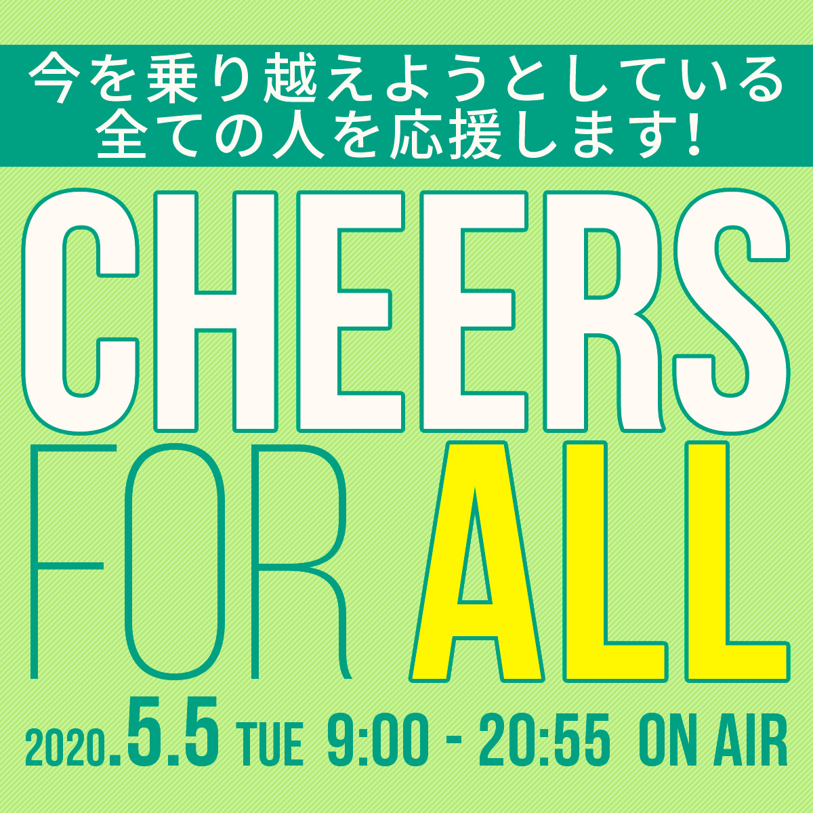
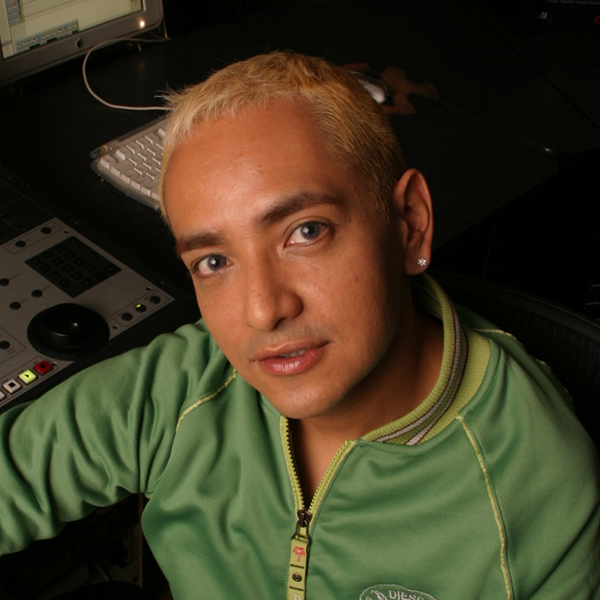
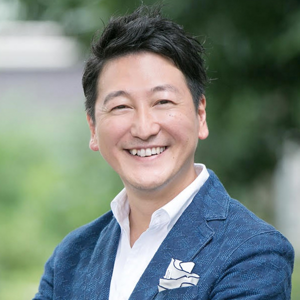
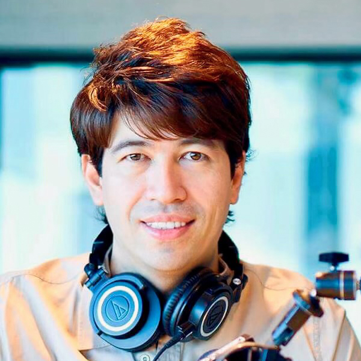
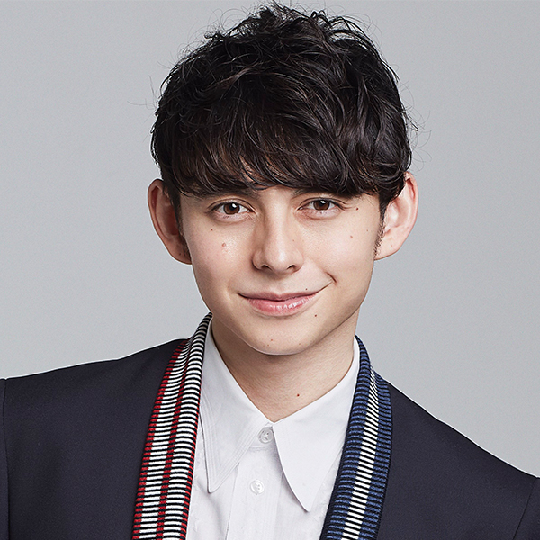
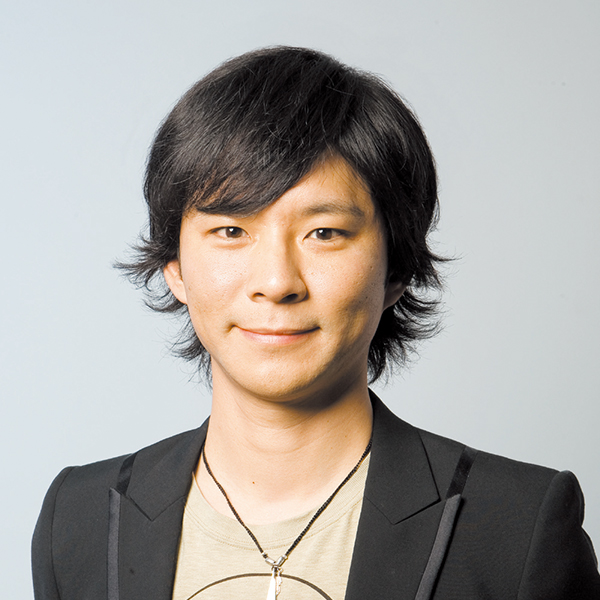
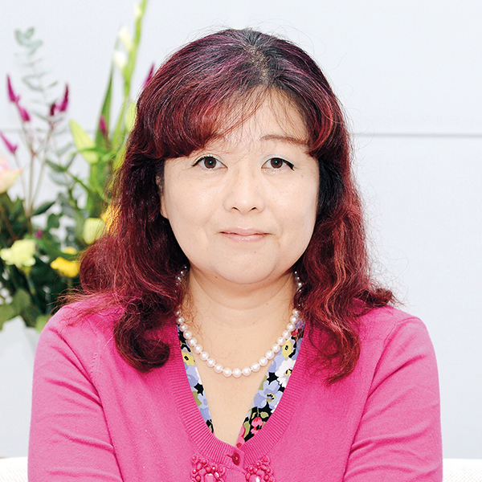
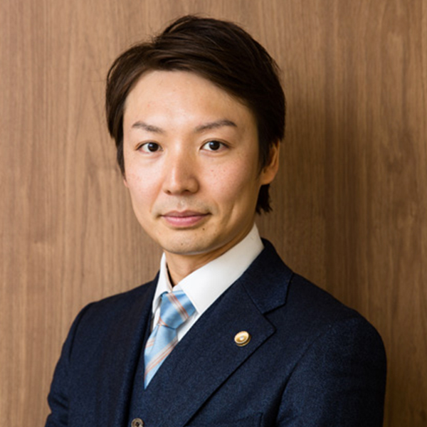
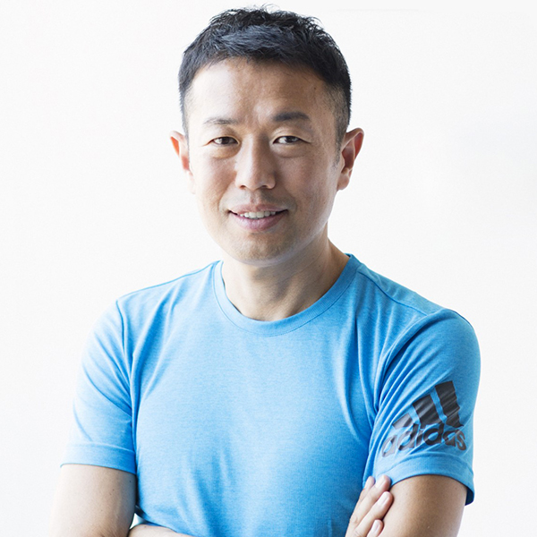
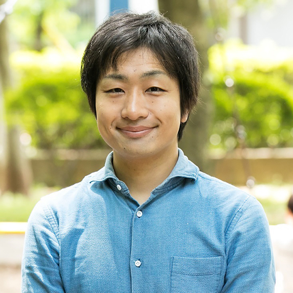

掲載日：2020年5月4日（月）
今を乗り越えようとする全ての人に、
5月5日 J-WAVE「CHEERS FOR ALL」
5月1日「気が滅入った時でも、このチャンネルを見れば少し元気になれる」、そんなニュースを届けるために立ち上がったグノシーの新チャンネル「コロナアクション」。早速、チャンネルにぴったりの希望を感じさせるニュースが飛び込んできました。
J-WAVEで始まった「ACTION FOR TOMORROW」、「#音楽を止めるな」、「HANDS TOGETHER」3本プロジェクト。今回は「ACTION FOR TOMORROW」、「HANDS TOGETHER」中心にオンエアする5月5日のスペシャルプログラム「CHEERS FOR ALL」を紹介させていただきます。
今を乗り越えようとしている全ての人を応援！
新型コロナウィルスの感染拡大により、一変した生活の中で、予定されていた仕事、移動、友人たちとの会合、その多くがキャンセルとなり不安やそれ以上の苦悩の中にいる方も多いと思います。
本来なら楽しいことがたくさんあったはずの連休。この苦境にあっても一人じゃない、お互いに励ましあって希望をつないでいけるというリスナー主役のラジオ番組が、放送されます。プレゼント企画もあるので、聞くだけじゃなく、参加して楽しむのにもぴったりの12時間になっています。
- 放送日時
- 2020年5月5日(火・こどもの日) 9:00~20:55
- 番組タイトル
- J-WAVE HOLIDAY SPECIAL CHEERS FOR ALL
- 放送形態
- 生放送 ※一部録音素材になります
- ナビゲーター
-
- 1.（9:00～13:00）横山エリカ
- 2.（13:00～17:00） DJ TARO
- 3.（17:00～20:55） 堀潤
- 「ACTION FOR TOMORROW」
レポーター - 森本晋太郎
- HANDS TOGETHER SPECIAL NAVIGATOR
- サッシャ、LiLiCo、ハリー杉山、レイチェル・チャン、稲葉友
- スペシャルゲスト
- 中田英寿、渡部建
- 専門家ゲスト
- 岡田晴恵(白鴎大学教育学部教授)
大宅達郎(弁護士)
小倉朋子(トータルフードプロデューサー)
中野ジェームス修一(フィジカルトレーナー)
駒崎弘樹(NPO法人フローレンス代表理事)
今村久美（NPO法人カタリバ代表理事）
塩村文夏（参議院議員）
ナビゲーター
-
横山エリカ - 
DJ TARO - 
堀潤
レポーター
-
森本晋太郎 - 
サッシャ -
LiLiCo - 
ハリー杉山 -
レイチェル・チャン -
稲葉友
TEAM J-WAVE ACTION FOR TOMORROW 連動
STEP ONE「CHEER UP WORKERS」のレポーターでおなじみトンツカタンの森本晋太郎が、「TEAM J-WAVE ACTION FOR TOMORROW」に参加してくれた172件（5/3現在）の中から11件のお店や会社にリモートでお話しを伺う企画。TEAM J-WAVEのお店の中から実際にスタジオにお取り寄せも行う予定。スペシャルゲストの中田英寿さんが支援する酒蔵の話や、渡部建さんの紹介する“おすすめテイクアウト＆デリバリーのお店”も聞き逃せないですね。
スペシャルゲスト
-
中田英寿 - 
渡部建
HANDS TOGETHER FROM J-WAVE
サッシャ、LiLiCo、稲葉友、ハリー杉山、レイチェル・チャンなどJ-WAVE でおなじみのナビゲーターがHANDS TOGETHER SPECIAL NAVIGATORとして、WEBサイトに応募のあった頑張る人たちへエールを送る企画。CHEERS FOR ALLプロデューサー高知尾綾子さんに伺ったところ、すでに医療従事者の皆さん、家族など様々な方々に向けた応援メッセージが寄せられているそうです。高知尾さんは「ラジオは双方向にコミュニケーションができるメディア。こんな時期で、なかなか伝えられない正直な想いを、どんな小さなことでも、ラジオを通して届けて欲しい」とおっしゃっていました。
専門家ゲストが不安や悩みにお応えします
医療、仕事・経営問題、料理、フィットネス、保育、教育、ペットと7名の専門家・プロをゲストにお招きして、日頃の不安や悩みを解決してくれるコーナー。高知尾さんは「（小さなことだけど）スーパーに売っている包装されていない野菜は、洗ったら生で食べても大丈夫なの？」や「（お子さんがいる家庭では特に）教育や進学、就職などにも今後の不安がある」など小さなことから大きな題材に至るまでたくさんの不安があると語ります。きっと自分が抱えている不安は、リスナーの多くも同じように抱えています。この機会にたくさんメッセージを送ってリスナー全員で少しでも安心できる今日、未来を描きたいですね。
ミュージックシェア&メッセージをいただいた方から抽選で、J-WAVE NIHONMONO LOUNGEで提供される予定の日本酒、Amazonギフト券のプレゼントもあるようです！
リスナーが主役の「CHEERS FOR ALL」をぜひお楽しみください。
専門家・プロ
- 
岡田晴恵
(白鴎大学教育学部教授) - 
大宅達郎(弁護士) 
小倉朋子
(トータルフードプロデューサー)- 
中野ジェームス修一
(フィジカルトレーナー) - 
駒崎弘樹
(NPO法人フローレンス代表理事) -
今村久美
（NPO法人カタリバ代表） -
塩村文夏（参議院議員）
一番身近なメディアとしてできることを「ACTION FOR TOMORROW」
J-WAVEは、仕事をしながら聞いているリスナーが多い。個人事業主、飲食店、デザイナー、などなど。2017年に立ち上がったそんなリスナーの皆さんとのネットワーク「TEAM J-WAVE」。今回、このネットワークを通じて一つのプロジェクトが立ち上がりました。
-「ACTION FOR TOMORROW」。
専用のWEBサイトから応募すると、現在営業を続けることが大変な飲食店経営者や個人商店の皆さんなど、コロナ禍でも頑張って取り組んでいる「お店や会社が実施中のサービス」をJ-WAVEの放送や、WEB、SNSで発信することができるプロジェクト。
今回のプロジェクトを主導されるJ-WAVEコンテンツプロデュース部部長渡邉岳史さんは、このプロジェクトは「みんなの大好き」がなくならないようにするために、ユーザーとの距離が近いメディアである「ラジオ」が背負う「使命」だと話してくださいました。
渡邉さんが考える、その使命の背景は、2つ。
お仕事をされている方もおうちで過ごしている方もそれぞれの時間に「最適な情報」を届けるメディアですが、特に災害時はより多くの皆さんの生活にフィットした情報を届けるメディアが「ラジオ」であること。
ネガティブな情報が話題を集めやすい他のマスメディアと比べて、そんなギスギスした情報だけではなく「一人ひとりの声を届ける」ことができる「ラジオ」だからこそ、その先に違う未来をつくることができるのではないか。と語ってくださいました。
この機会に一人でも多くの方へ、皆さんのお店や会社で取り組まれているサービスを届けるきっかけとして参加してみてはいかがでしょうか。
- キャンペーンタイトル
- TEAM J-WAVE ACTION FOR TOMORROW
- 概要
- 現在営業を続けることが大変な飲食店経営者や個人商店などを中心に、コロナ禍でお店や会社が実施中のサービスをJ-WAVEの放送や、WEB、SNSで発信。
- 対象者
- J-WAVEのHPの募集ページをご覧ください
※告知したいサービス情報と音声ファイルを送信(音声での参加は希望者のみ)することで応募が完了となります
※TEAM J-WAVEへの加入が条件となります -
＜ご紹介するお店や会社が実施中のサービス例＞
「お店は閉めてランチ時にテイクアウトのお弁当を売っています」
「ネット販売の品目を増やし、こんなサービスを始めました」
「オンラインでの対面レッスン実施中です」
「リモートワークがスムースになるこんな商品販売中です」など
コロナアクションチャンネルでも”頑張っている人・企業・団体”を応援しています
多くの人に知ってほしい商品・サービス、そしてコロナに負けずに頑張っている人や企業、その他団体の取り組みなどを 期間限定でTwitterにて募集し、グノシーの取材班が無料で取材・宣伝します。「#コロナアクションチャンネル」を付けて投稿することで応募完了。投稿の内容は自薦や他薦を問いません。投稿された方の中から抽選で合計3組様に、「駆けつけグノシー グッテレ」が取材し、動画もしくは記事ニュースを 新チャンネル「コロナアクション」内にて配信します。取材はオンラインで行うことも可能です。※「PR表記」の記事になります。
- 募集期間期間
- 第一期:2020年5月1日(金) 0:00～5月15日(金)23:59
第二期:2020年5月16日(土)0:00～5月29日(金)23:59 - 応募方法
-
- 1）Twitterで公式アカウント(@grill_PR)をフォロー
- 2）ハッシュタグ「#コロナアクションチャンネル」とともに取材を希望する内容をツイート
- 当選者数
- 第一期、第二期合わせて3組様
第一期当選発表:2020年5月20日(水)までに当選者へTwitterのDMにて連絡いたします
第二期当選発表:2020年6月3日(水)までに当選者へTwitterのDMにて連絡いたします - 取材募集対象(自薦・他薦含む)
- 多くの人に知ってほしい商品・サービス / コロナに負けないよう頑張っている人・企業、団体など / コロナの苦境にいる人々を応援/支援している人・企業・団体など